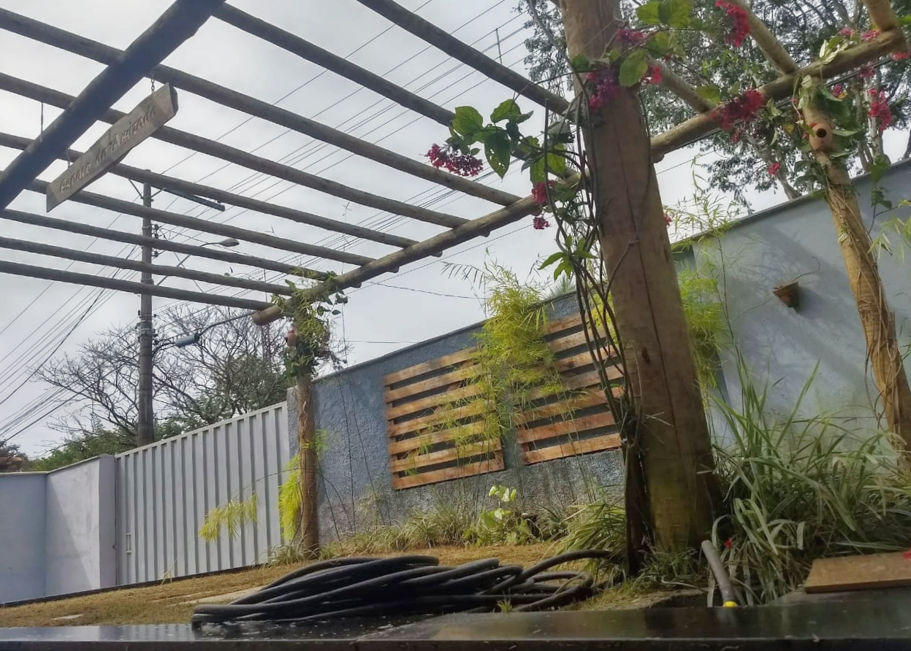
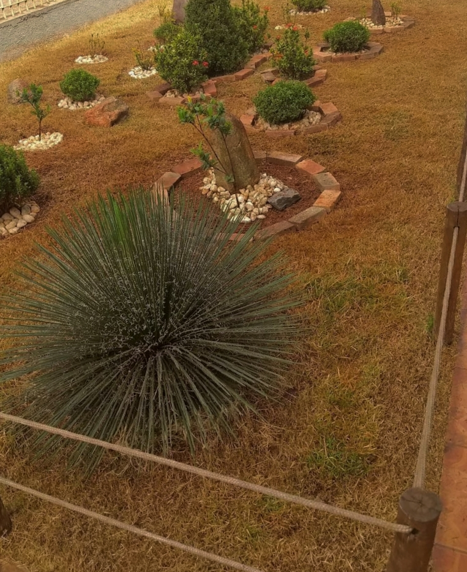

A igreja matriz fica localizada na Rua José Luiz Prado,
número 26, no Bairro São Tarcísio da cidade de Mário Campos.
No dia 08/12 é comemorado a festa de Nossa Senhora da Conceição.
Nesta semana (29/11 até 07/12) estará acontecendo a novena em honra a nossa Senhora da Conceição.
Durante a semana da novena, ocorrerá uma programação especial:
todos os dias (incluindo o domingo), ás 19:00h será rezado um terço
Mariano, seguido da própria novena, e logo em seguida ás 19:30h
será celebrada a santa missa.

